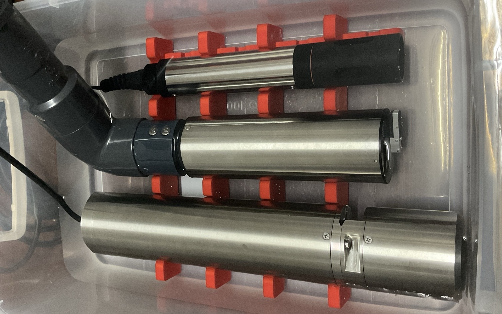
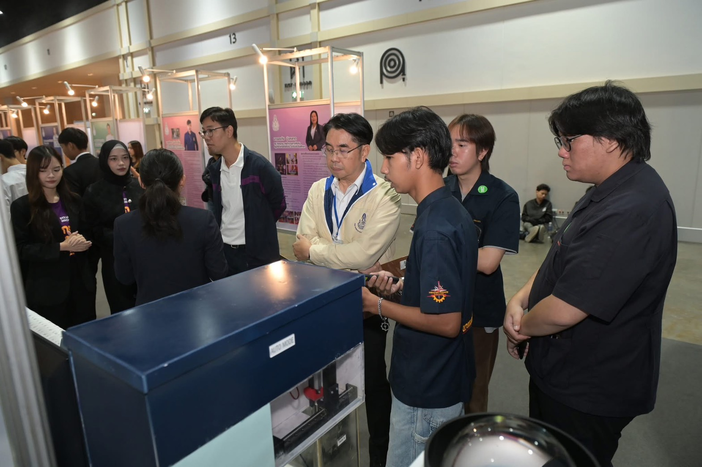

โปรเจกต์ ST500 AI เป็นการพัฒนาระบบอัตโนมัติสำหรับตรวจสอบและควบคุมคุณภาพน้ำเสียในโรงงานอุตสาหกรรม โดยใช้เทคโนโลยีเซนเซอร์ IoT ที่มีความแม่นยำสูง
ระบบถูกออกแบบโครงสร้างสถาปัตยกรรมเครือข่ายและการควบคุมฮาร์ดแวร์ผ่านแผงคอนโทรล โดยนำข้อมูลมาแสดงผลและจัดการแบบศูนย์กลาง เพื่อยกระดับความปลอดภัยและประสิทธิภาพในการบริหารจัดการน้ำ
Modbus / MQTT
Home Assistant
IoT & Automation Engineer
2025-2026

